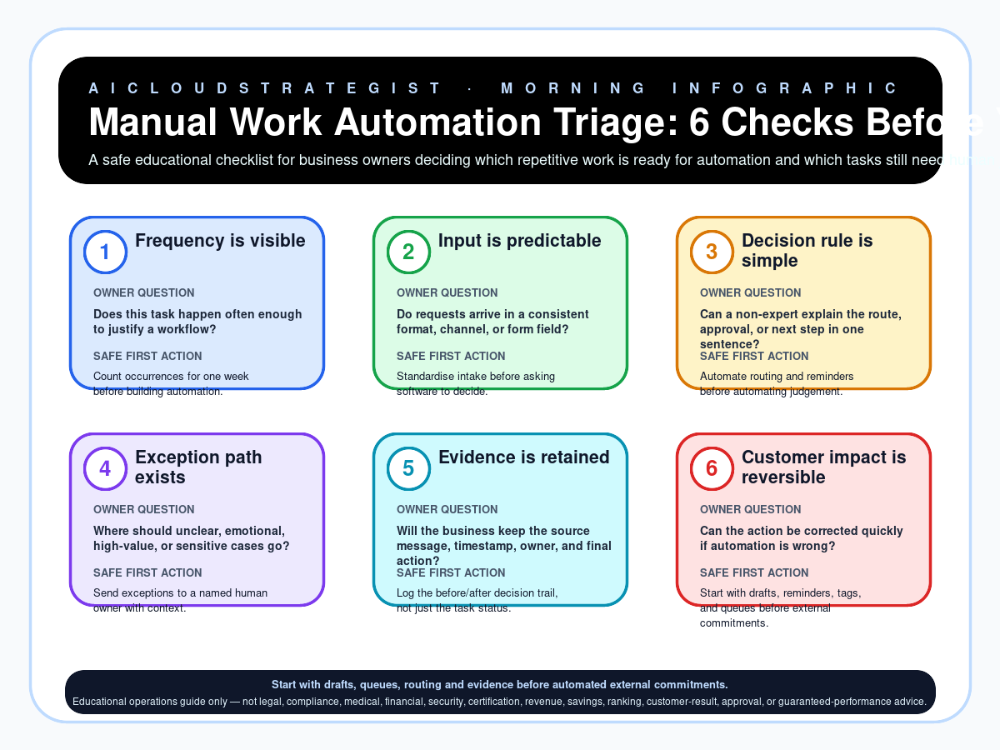

Morning publication · workflow automation
Manual Work Automation Triage: 6 Checks Before You Automate
A safe educational checklist for business owners deciding which repetitive work is ready for automation and which tasks still need human judgement first.

Six checks before automation
| Step | Check | Owner question | Safe first action |
|---|---|---|---|
| 1 | Frequency is visible | Does this task happen often enough to justify a workflow? | Count occurrences for one week before building automation. |
| 2 | Input is predictable | Do requests arrive in a consistent format, channel, or form field? | Standardise intake before asking software to decide. |
| 3 | Decision rule is simple | Can a non-expert explain the route, approval, or next step in one sentence? | Automate routing and reminders before automating judgement. |
| 4 | Exception path exists | Where should unclear, emotional, high-value, or sensitive cases go? | Send exceptions to a named human owner with context. |
| 5 | Evidence is retained | Will the business keep the source message, timestamp, owner, and final action? | Log the before/after decision trail, not just the task status. |
| 6 | Customer impact is reversible | Can the action be corrected quickly if automation is wrong? | Start with drafts, reminders, tags, and queues before external commitments. |
Truth boundary
Educational operations guide only — not legal, compliance, medical, financial, security, certification, revenue, savings, ranking, customer-result, approval, or guaranteed-performance advice.